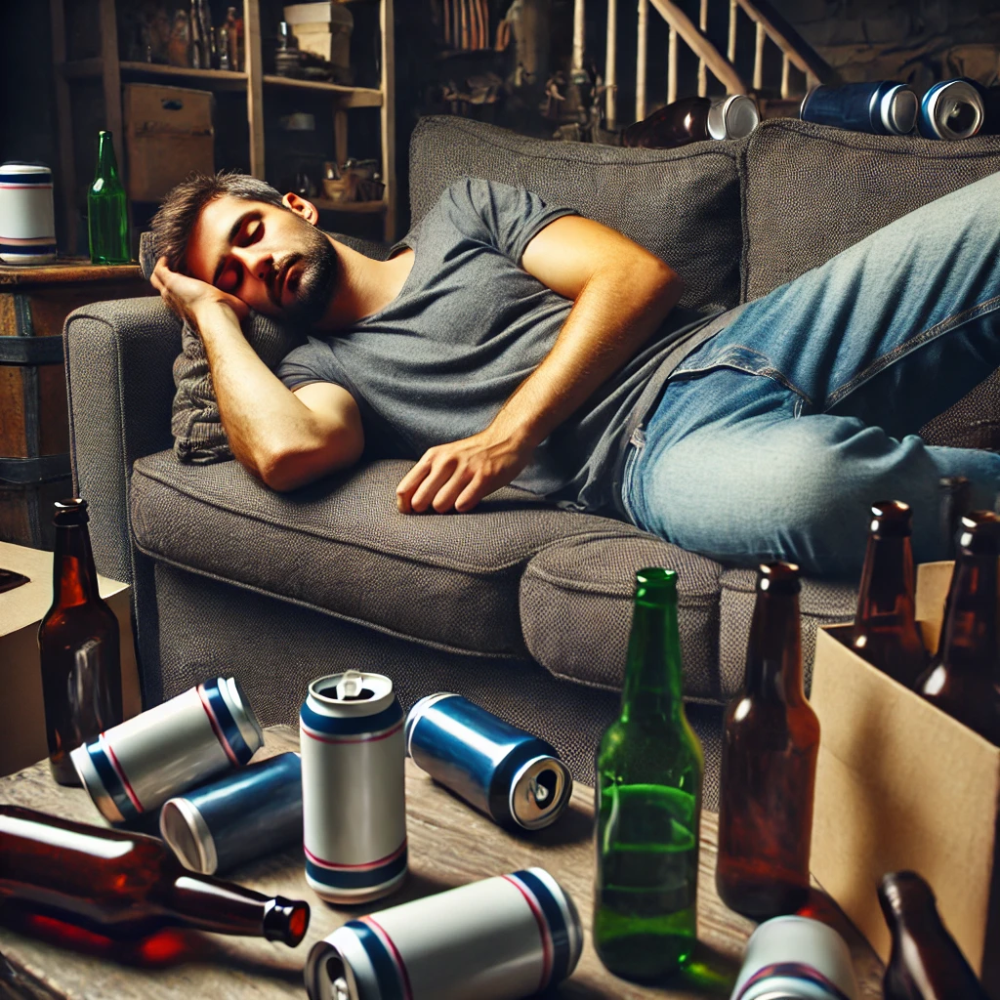
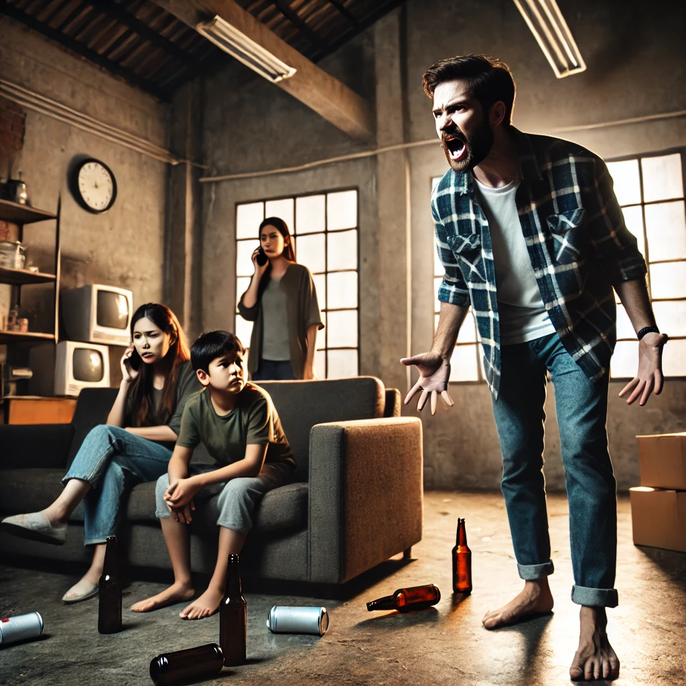

Guide
1. Drink
-
Enjoy our drinks however you like,
here is one of our happy customers doing just that!
I really can't believe this isn't alcohol! - Tom, recovering alcoholic
2. Sleep

-
Many of our customers prefer to sleep after consuimg
- Getting rid of nausea unrelated* to the consumption of our products.
- Headaches the day after which you can use to excuse poor behaviour.
"reasonable" amounts of ICBINA.
Benefits include but are not limited to:
3. Wake up and communicate with your family

-
We also stress the importance of good communication with your family
in conjunction with the consumption of our products.
Many may not understand that it is in fact not alcohol so communication must remain clear, as one of our clients put it:
You little shits dare wake me up from my nap? I swear to god I'll get the belt - Fred, caring father and loving husband
4. Go on vacation
-
After following these steps you may feel the urgency to take a vacation,
just to be able to relax and get some space from your non
understanding family.
What? I thought this was America? I'm sorry this isn't America? - Randy, long time customer and vacation goer